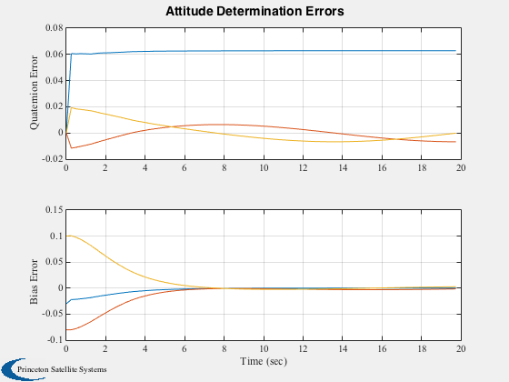
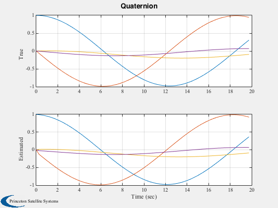
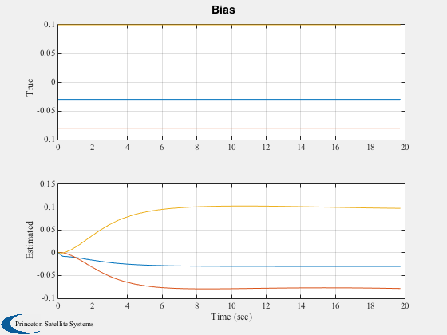
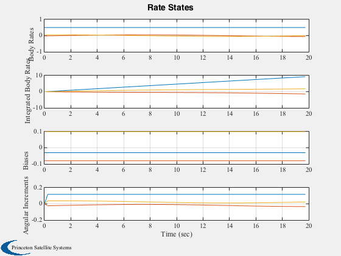

Test a star sensor attitude determination system with gyros.
dT is the time step for the attitude determination system. You can numerically integrate with a smaller time step by setting nInt > 1.
Since version 3. ------------------------------------------------------------------------- See also AttDet, StarSensor, RIGOut, QMult, QPose, QUnit, Plot2D, RK4, RandSC -------------------------------------------------------------------------
Contents
%-------------------------------------------------------------------------- % Copyright 1994 Princeton Satellite Systems, Inc. All rights reserved. %-------------------------------------------------------------------------- rng(0); %------------------------------------------------------------------------ % Constants degToRad = pi/180; %------------------------------------------------------------------------ % Simulation data nInt = 2; %------------------------------------------------------------------------ % Spacecraft data inr = [1000 0 0;0 2000 0; 0 0 2000]; invInr = inv(inr); torque = zeros(3,1); %------------------------------------------------------------------------ % Gyro data uRIG = eye(3); %------------------------------------------------------------------------ % Star Sensor data qBToS = [cos(pi/4); 0; sin(pi/4); 0]; uS = [0 0 1]'; fov = 30*degToRad; fScale = 1; nStars = 600; %------------------------------------------------------------------------
Initial state
%----------------------------------------------------- wo = 0.502654825; x = [1 0 0 0 wo -0.03*wo 0.1*wo 0 0 0 -0.03 -0.08 0.1]'; % True attitude q = QUnit([-0.5 -0.5 -0.5 -0.5]'); % Initial estimate nRWRIG = zeros(3,1); nBRIG = zeros(3,1); nORIG = zeros(3,1); betaRIG = zeros(3,1); nSim = 80; %----------------------------------------------------- t = 0; q = QUnit(q); x(1:4) = QUnit(x(1:4)); dT = 0.25; %------------------------------------------------------------------------ % Set up arrays angInc = zeros(3,1); xPlot = zeros(13,nSim); qPlot = zeros( 4,nSim); bPlot = zeros( 3,nSim); aPlot = zeros( 3,nSim); tPlot = zeros( 1,nSim); qEPlot = zeros( 4,nSim); xRIGOld = zeros(3,1); %------------------------------------------------------------------------ % Control system initialization b = zeros(3,1); p = eye(6); Q = eye(6); r = 0.0001; %------------------------------------------------------------------------ % Create a random star catalog starCatalog = RandSC(nStars,5); %------------------------------------------------------------------------
Run the simulation
%------------------------------------------------------------------------ for i = 1:nSim % Attitude Determination %----------------------- starData = StarSensor(x(1:4),qBToS,uS,starCatalog,fov,fScale); [angInc,xRIGOld] = RIGOut( x(8:10), xRIGOld, nORIG ); % Initialize on the first pass %----------------------------- if( i == 1 ) [q,b,p] = AttDet(angInc,q,dT,b,p,Q,r,qBToS,starData,starCatalog,fScale,1); else [q,b,p] = AttDet(angInc,q,dT,b,p,Q,r,qBToS,starData,starCatalog,fScale,0); end err_x_q_b = [QMult(QPose(q),x(1:4)),x(1:4),q,[0;b],[0;x(11:13)]]; % Plotting %--------- qPlot(:,i) = err_x_q_b(:,1); bPlot(:,i) = b; xPlot(:,i) = x; aPlot(:,i) = angInc; tPlot(i) = t; qEPlot(:,i) = q; % Simulation %----------- for i = 1:nInt x = RK4( @FRBwRIG, x, dT/nInt, t, inr, invInr, torque,... uRIG, nRWRIG, nBRIG, betaRIG ); x(1:4) = QUnit(x(1:4)); t = t + dT/nInt; end end %------------------------------------------------------------------------
StarMeas: Acquiring
Plot results
%------------------------------------------------------------------------ yLbl = ['Quaternion Error';... 'Bias Error ';]; Plot2D( tPlot, [qPlot(2:4,:);xPlot(11:13,:)-bPlot],'Time (sec)',yLbl,... 'Attitude Determination Errors','lin',['1:3';'4:6']) yLbl = ['True ';... 'Estimated';]; Plot2D( tPlot, [xPlot(1:4,:);qEPlot],'Time (sec)',yLbl,'Quaternion',... 'lin',['1:4';'5:8']) yLbl = ['True ';... 'Estimated';]; Plot2D( tPlot, [xPlot(11:13,:);bPlot],'Time (sec)',yLbl,'Bias','lin',... ['1:3';'4:6']) yLbl = ['Body Rates ';... 'Integrated Body Rates';... 'Biases ';... 'Angular Increments ']; Plot2D( tPlot, [xPlot(5:13,:);aPlot],'Time (sec)',yLbl,'Rate States',... 'lin',['1:3 ';'4:6 ';'7:9 ';'10:12']) %-------------------------------------- % PSS internal file version information %--------------------------------------   